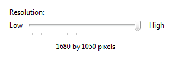
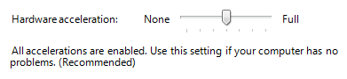
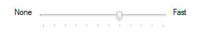
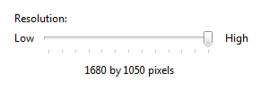

[!NOTE] This design guide was created for Windows 7 and has not been updated for newer versions of Windows. Much of the guidance still applies in principle, but the presentation and examples do not reflect our current design guidance.
With a slider, users can choose from a continuous range of values. A slider has a bar that shows the range and an indicator that shows the current value. Optional tick marks show values.
A typical slider.
[!Note]
Guidelines related to layout are presented in a separate article.
Â
Use a slider when you want your users to be able to set defined, contiguous values (such as volume or brightness) or a range of discrete values (such as screen resolution settings).
A slider is a good choice when you know that users think of the value as a relative quantity, not a numeric value. For example, users think about setting their audio volume to low or medium—not about setting the value to 2 or 5.
To decide, consider these questions:
If a slider or a numeric text box is possible, use a numeric text box if:
Use a slider if:
Use a natural orientation. For example, if the slider represents a real-world value that is normally shown vertically (such as temperature), use a vertical orientation.
Orient the slider to reflect the culture of your users. For example, Western cultures read from left to right, so for horizontal sliders, put the low end of the range on the left and the high end on the right. For cultures that read from right to left, do the opposite.
Size the control so that a user can easily set the desired value. For settings with discrete values, make sure the user can easily select any value using the mouse.
Consider using a non-linear scale if the range of values is large and users will likely select values at one end of the range. For example, time value might be 1 minute, 1 hour, 1 day, or 1 month.
Whenever practical, give immediate feedback while or after a user makes a selection. For example, the Microsoft Windows volume control beeps to indicate the resulting audio volume.
Use labels to show the range of values.
Exception: If the slider is vertically oriented and the top label is Maximum, High, More, or equivalent, you can omit the other labels since the meaning is clear.

In this example, the slider's vertical orientation makes the range labels unnecessary.
Use tick marks when users need to know the approximate value of the setting.
Use tick marks and a value label when users need to know the exact value of the setting they choose. Always use a value label if a user needs to know the units to make sense of the setting.

In this example, a label is used to clearly indicate the selected value.
For horizontally-oriented sliders, place tick marks under the slider. For vertically-oriented sliders, place tick marks to the right for Western cultures; for cultures that read from right to left, do the opposite.
Place the value label completely under the slider control so that the relationship is clear.
Incorrect:

In this example, the value label isn't aligned under the slider.
When disabling a slider, also disable any associated labels.
Don't use both a slider and a numeric text box for the same setting. Use only the more appropriate control.
Exception: Use both controls when the user needs both immediate feedback and the ability to set an exact numeric value.
Don't use a slider as a progress indicator.
Don't change the size of the slider indicator from the default size.
Incorrect:

In this example, a size smaller than the default is used.
Correct:

In this example, the default size is used.
Don't label every tick mark.

Recommended sizing and spacing for sliders.
If you need a value label, display it below the slider.
Center the text relative to the control and include the units (such as pixels).

In this example, the value label is centered under the slider and includes the units.
When referring to sliders:
Example: To increase your screen resolution, move the Screen resolution slider to the right.
Â
Â